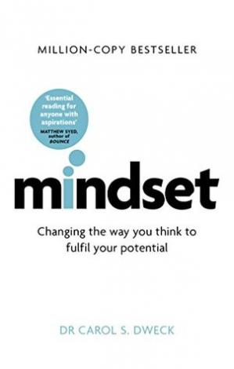
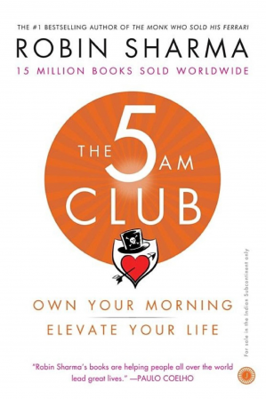

Welcome to Me.My Bookstore
e-book In Collection

Atomic Habits: An Easy & Proven Way to Build Good Habits & Break Bad Ones
No matter your goals, Atomic Habits offers a proven framework for improving--every day. James Clear, one of the world's leading experts on habit formation, reveals practical strategies that will teach you exactly how to form good habits, break bad ones, and master the tiny behaviors that lead to remarkable results...read more

Mindset: Changing The Way You Think To Fulfill Your Potential
No matter your goals, Atomic Habits offers a proven framework for improving--every day. James Clear, one of the world's leading experts on habit formation, reveals practical strategies that will teach you exactly how to form good habits, break bad ones, and master the tiny behaviors that lead to remarkable results...read more
The Power of Now: A Guide to Spiritual Enlightenment
To make the journey into the Now we will need to leave our analytical mind and its false created self, the ego, behind...read more

The 5 AM Club
Legendary leadership and elite performance expert Robin Sharma introduced The 5am Club concept over twenty years ago, based on a revolutionary morning routine that has helped his clients maximize their productivity...read more
The 7 Habits of Highly Effective People: Powerful Lessons in Personal Change and Habits
What are the habits of successful people?...read more